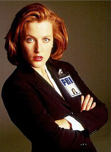

Dana Katherine Scully (Played by Gillian Anderson) was an FBI Special Agent and medical doctor with a background in hard science who brought her scientific expertise and perspective to the X-files. (TXF: "Pilot", et al.) In 2002, she went on the run from the law with her former partner, Fox Mulder. (TXF: "The Truth") She was employed as a doctor at Our Lady of Sorrows Hospital by 2008, at which time she became involved in an FBI case on which Mulder worked in an unofficial capacity. (The X-Files: I Want to Believe) In 2016 she returned to the FBI along with Mulder and together they reopened the X-files and resumed their investigations into them whilst also continuing her duties as a doctor at the hospital.
